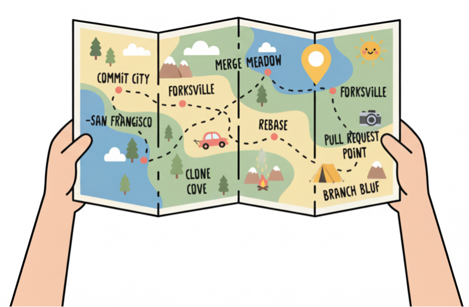
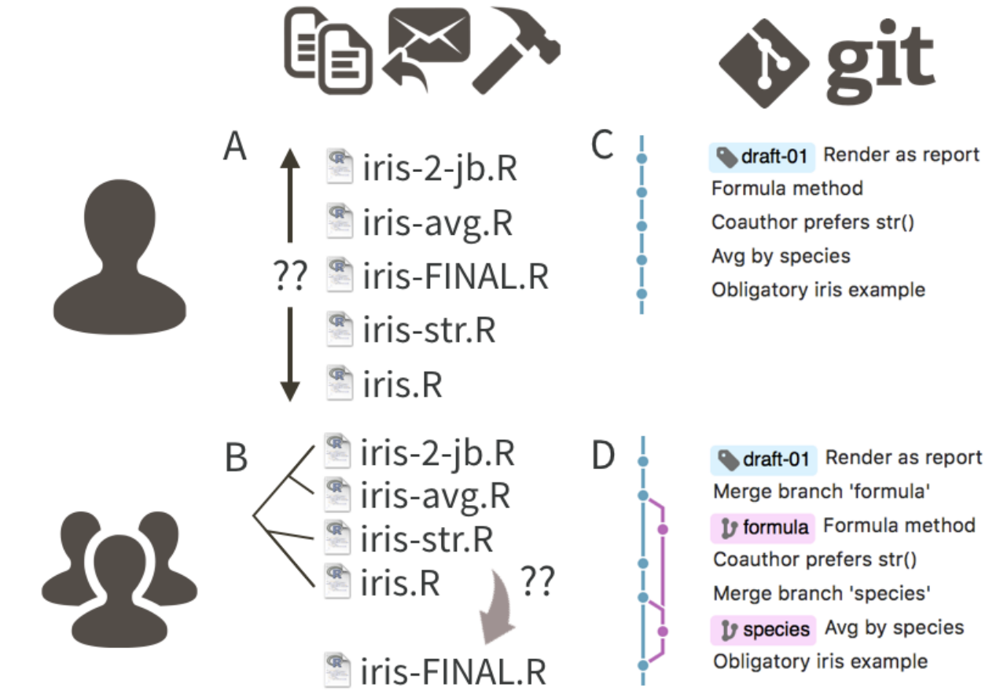
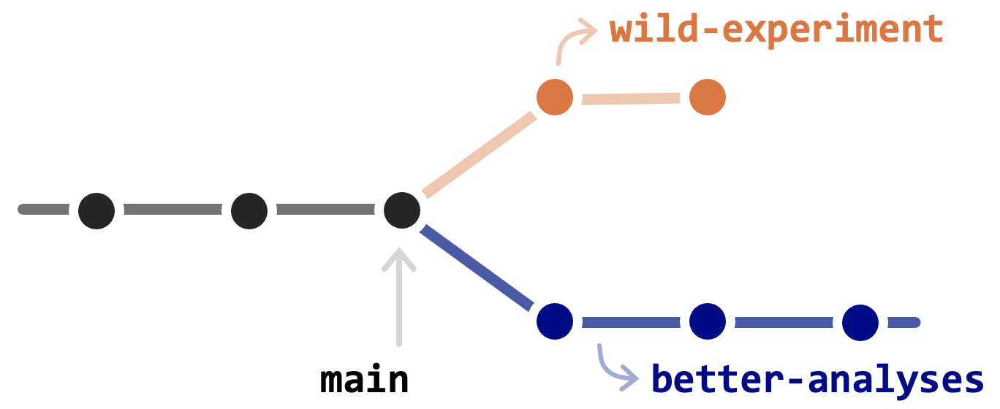
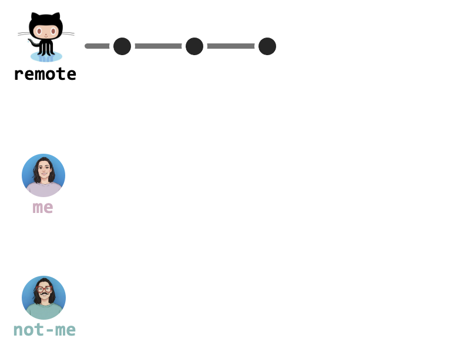
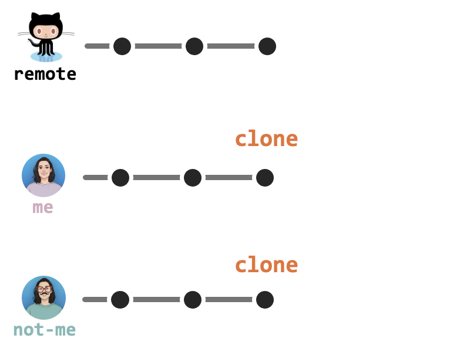
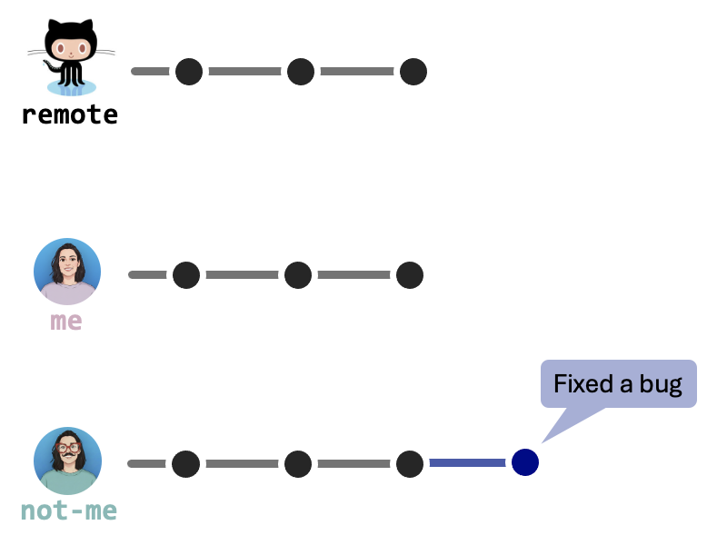
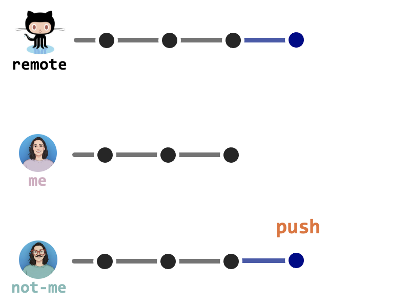
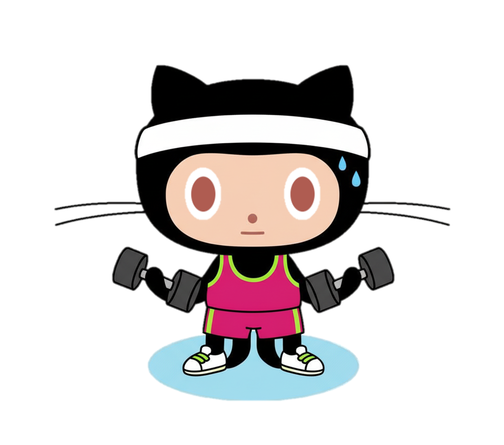

Why would a researcher use a version control system (e.g., Git)?
What’s the point of hosting your work online (e.g., on GitHub)?
Useful Git/GitHubconcepts I keep in my purse
Getting started (the right way): configuration climbing
Early Git wins: some basic workflows for everyday life
The rest of the game: some lesser-known fun things you can do with Github
e.g. Github Pages, Search, and Actions

Is it going to hurt?
Yes.
Before you can get started, you have to: install Git, get local Git talking to GitHub, and make sure RStudio can talk to local Git (and, therefore, GitHub).
This is one-time or “once-per-computer” pain & we will do it together
Beginner–intermediate use requires(small) changes to your normal, daily workflow: e.g. dedicate a directory to each project, make it a git repository, periodically make commits and push them to Github.
It feels weird at first but quickly becomes second nature & we will do it together
Advanced GitHub use, e.g. to work with other people or coordinate your own work from multiple computers? Knock-knock — Who’s there? —merge conflicts.
This is not one-time pain but the best remedy is prevention, which we do today
Part 1
Excuse me,do you have a moment to talk about version control ?
Why bother with all this?
I can think of two main reasons:
The noble reasons
Science is in bad shape people.
Replicability and traceability of scientific claims is horrifyingly insufficient, across fields.
You analysis is the scientific product, the paper is just advertisement.
And analyses should (in principle) be directly accessible to others, or at least carefully documented…
The selfish reasons
Research produces manyfiles: data files, figures, tables, docs, slides, and (yes) code…
Most of these files evolve over the course of a project and often need to be shared with others.
Without explicit and structured management, project organization can easily descend into chaos, and taking your mental wellbeing with it (ask me how I know…)
The “poor man’s version” of version control
This unhappy result can be avoided by repurposing tools and workflows from the software development world.

What is Git?
Git is a version control system.
It manages the evolution of a set of files (a repository or repo) in a sane, highly structured way.
Git’s original purpose was to help groups of developers work collaboratively on big software projects.
It is like a “TrackChanges” feature from Microsoft Word, but more rigorous, powerful, and scaled up to multiple files.
It enables the distribution of any file across different people, computers, and across time.
Now the bad news
Git was not built for you.
You will undoubtedly notice this, so it’s best to know in advance.
Git’s model of file management can feel uncomfortably rigid, especially for beginners.
Happily, there are many helpful tools that mediate your interactions with Git.
What is GitHub?
GitHub complements Git by providing a polished user interface and distribution mechanism for Gitrepositories.
Git = software you use locally to record changes to a set of files.
GitHub = hosting service that provides a Git-aware home for such projects on the internet.
GitHub is like DropBox or Google Drive, but much, much better.
It allows others to browse project files, explore their history, sync up with the current version, and even propose or make changes.
Many operations can be done entirely in the browser, including editing or adding files.
Let’s take a look!
Some examples in bio-research
A diverse range of efforts (from individual, to labs, to global collaborations) have chosen GitHub as productive place to share code and ideas
Benefits of using hosted version control
In a nutshel: doing your work becomes tightly integrated with organizing, recording, and disseminating it. It’s not a separate, burdensome task you are tempted to neglect.
Tell the story of your project. Make analytical decisions traceable by documenting them as you go.
Back up your work!
Travel back in time and experiment with changes. When you are new with coding (or, frankly, even when you are not), it is common to mess things up. Sometimes the easiest fix is to get a fresh copy from GitHub and move on with your life.
Make it visible: little extra effort required to create a web presence for a project. The highly functional web interface makes it a pleasure to browse through your own work. You can navigate and search through multiple projects and files and across time.
Collaboration and knowledge sharing is much easier and more structured (with collegues as well as remote contributors). GitHub also makes a fantastic course management system for teachers.
Git is WIDELY used outside these walls (required for most job positions). By using common mechanics across work modes (research, teaching, analysis), you achieve basic competence quickly and avoid the demoralizing forget-relearn cycle
Part 2
Fundamental Git / GitHub concepts and jargon
Git basics
Let’s talk a bit more about Git.
In this sections we will:
introduce the most important basic ideas
define some Gitvocabulary
link each concept to research-related tasks or projects
Keep in mind that actual usage is the most effective way to build up a good mental model for Git, so don’t worry if some concept don’t feel so clear just yet
Once again, there many excellent external resources for Git, which you can find in the Resources at the end of the presenation.
Repositories ( repos ) and roles
Recall: Git manages the evolution of a set of files
Such set of files (or directory) is called a repository (repo for friends).
A repository can be public or private.
The owner of a repo can grant permission to others (collaborators): e.g. read (only relevant for private repos), write (push) and admin access.
A repo can be owned by a person or by an organization.
Commits
A commit is a snapshot of one or more files inside a repository.
Instead of saving a copy of a file, versioning it chaging it’s name (e.g. “[…] _v2” or “[…] _SD”), you create a commit.
On the surface nothing changes, but the history of that file is secretly saved, including metadata (e.g. author, date, message)
You can add more information about the changes you’ve made in a commit message
Staging
Git commits actually happen in two distinct steps (though they are often used together).
Stage (via git add): tell Gitwhich changes from your repo you intend to include in the next commit.
Commit (via git commit): take what is in the staging area and create a new commit object in the repo’s history, with its message and unique ID.
Why is this useful?
Recall: a commit is a snapshot of one or more files
Staging lets you split your work into logical commits, even if you edited many files or made mixed changes in the same file.
For example, you can stage only the lines related to a bugfix and commit them separately from formatting changes, improving history readability and making review and rollback easier.
Time travel: hashs and tags
Committing (well) helps you tell the story of your project to yourself and to other people.
But it does not end there… Git also lets you time travel through your project
Getting the files from a commit in the past is known as doing a check out
Recall: each commit has a unique ID called a hash.
You can tell Git what commit I want to check out using (part of) the commit hash.
My other commits still exist, but when I look in my repo, it’s as if they never happened.
You can also give certain important commits a special name (a tag) that you can then use instead of their hash, to refer to them during time travel. People often use tags for software versions.
Parallel universes: branches
So far, everything has been very linear and ordered. The thing is… this isn’t really how projects work.
Sometimes you want to try something out, make experiments. The way you do this in Git is with branches
A branch is a moveable label attached to a commit.

The default branch name in Git is main (not master!)
It’s common for the main branch to hold a stable version of the code or files, while other branches contain work in progress.
Quantum collapse: merging
Branches are easy to throw away if you decide you don’t like your changes.
But if you are happy with some work, you typically want to combine it back into the main branch.
To get changes from one branch into another, youmerge them.
This last commit is a combination of all of the commits from both branches.
* Different collaborators can work on different branches independently!
Remote (vs. local)
Everyone knows that you should back up your work regularly, ideally to somewhere geographically distinct from your computer.
In Git this place is called a remote. A very popular place to put your remotes is Github.
Having a remote copy of your repos has several advantages:
Safer
Access from different places
Shared access with other people
Working on (your) remotes: cloning, pushing and pulling

To get some work from a remote on your local computer (for the first time) you clone it.


To send new updates to the remote you push

To get new updates (commits) from the remote you pull
Working on someone else’s repo: forking and pull requests
Cloning is a client-sideGit operation: it creates a local copy of a remote repo. The remote repo can be original or a fork.
Forking gives you your own remote copy of someone else’s repo. It creates a new remote repository under your user (or organization), starting from another repo’s contents and history.
When you are not a collaborator on the original repo (e.g., open-source contributions), you usually want your own independent remote for an existing project
In these workflows, you fork first (to create your own remote), then clone that fork to your machine and work there.
A fork can be kept in sync with its upstream repo (by pulling).
To propose changes back to the original, you’’ll use a pull request instead of pushing directly.
GitHub Issues
Issues are essentially a list of things: bugs, feature requests, to-dos, whatever
Issues can be assigned to people (e.g., to-dos) and tagged (“bug” or “progress-report”).
They are tightly integrated with:
email, allowing you to copy/embed important conversations in the associated repo;
commits allowing you to record that, e.g. “the changes in this commit solve the problem discussed in that issue.”
As a new GitHub user, one of the most productive things you can do is to use GitHub issues to provide a clear bug report or feature request for a package you use.
Questions?
No? Let’s play a game
Break time
Bonus: fun fact
The GitHub mascot is named Octocat, a merge between an octopuss and cat.
Do you know the story behind this logo creation?
The idea came from the “octopus merge” – the practice of combining three or more branches of development. The logo was created by Simon Oxley, who doesn’t remember creating it, apparently. Initially, Simon thought of calling his creation “Octopuss” (combination of octopus and pussycat) to represent how complex code combines can create peculiar things.
In the end, GitHub decided to go with Octocat (for obvious reasons).
Part 3
Setting-up Git and GitHub (the right way)
Half the battle
Getting all the necessary software installed, configured, and playing nicely together is honestly half the battle when first adopting Git.
You will find far more resources for how to use Git than for installation and configuration.
Why? The experts …
Have been doing this for years. It’s just not hard for them anymore.
Probably use some flavor of Unix & they may secretly (or not so secretly) take pride in neither using nor knowing anything about Windows.
In their defense, it’s hard to write installation instructions. Failures can be specific to an individual OS or even individual computer…
But… we are in this together! So let’s set you up (the right way)
Is R and RStudio up to date?
This is a great time to make sure your R installation is current.
# Check your current R version R.version.string# ... and (optionally) update your R packagesupdate.packages(ask =FALSE, checkBuilt =TRUE)
Is my R version “old”?
R had a major version change in April 2020, with the release of 4.0.0. It is a good idea to be on the current major version (meaning 4.something)
Each major version is followed by several years of smaller (minor and patch) releases. You can be more relaxed about upgrading minor versions, but you still want to stay reasonably current. My advise: never fall more than 1 minor version behind.
You don’t want to adopt new things on day one. But at some point, running old versions of software adds unnecessary difficulty. So get current, people.
The shell
The shell is a program on your computer whose job is to run other programs.
Also known as: terminal, command line, console or bash
In research departments, you usually see this program when working on a server (that does not have a GUI client).
Even if you do most of your Git operations via a client (e.g., RStudio or GitHub), you will sometimes need tp work in the shell.
As you get more comfortable with Git, you might even prefer to do more and more via the shell.
It is often handy to launch a shell from RStudio, hear me out.
Why? Because RStudio makes an effort to put you in a sane working directory (the current project).
To launch a shell within RStudio: Tools > Terminal
The shell is often called the “terminal”.
One way to launch it is via Spotlight Search: hit Command⌘+Space and start typing “terminal”.
There are many possible shells you can end up in.
Unless you know better, use the Git Bash shell. This is the shell that ships with Git for Windows (so, you will have it on your system once you install Git).
RStudio should automatically detect the presence of Git Bash. You can inspect and influence this via Tools > Global Options > Terminal.
To access Git Bash outside of RStudio: open the the Windows menu, click on the “Git” folder and select “Git Bash”.
Is Git installed?
Go to the shell and type:
which git
This should give you the path to your Git executable.
Let’s also check which version you are using:
git--version
If you see something like git: command not found you (likely) don’t have Git intalled.
Install Git for Windows, also known as msysgit or “Git Bash”, to get Git in addition to some other useful tools, such as the Bash shell.
NOTE: When asked about “Adjusting your PATH environment”, make sure to select “Git from the command line and also from 3rd-party software”. Otherwise, accept the defaults.
You should now have a Git executable at: C:/Program Files/Git/bin/git.exe.
Install the Xcode command line tools (not all of Xcode), which includes Git.
What user name should I use? This doesn’t matter. Your commits will be labelled with this user name though, so make it informative to potential collaborators (and future you).
What email should I use? This must be the email associated with your GitHub account.
Wait, what happened?
git config --global--list
Check out the Software Carpentry for more things you can do with git config.
You can also set your Git user name and email from within R thanks to the usethis package.
Click on your profile icon (top right corner) > Settings > Developer Settings (at end of the sidebar menu) > Personal access tokens > Tokens (classic)
Click on Generate new token > Generate new token (classic)
Select scopes: “repo”, “user”, and “workflow” (default from usethis)
Click on Generate token.
Copy the generated PAT to your clipboard.
Provide this PAT next time a Git operation asks for your password… or store it in your favourite password manager.
Set up keys for SSH
Here is what is going to happen:
We’ll generate a key pair (i.e. two long strings of characters): one public and one private key.
We’ll place the public key on a server (aka GitHub!),
We’ll add the private key to our ssh-agent on the client (aka your computer!).
When the two match up, the system unlocks without the need for a password. Magic.
Some advice
[It’s normal to associate multiple public keys with your GitHub account. You should probably have one key pair per computer (at least, I do this).]{m-space}
You can increase security even more by protecting the private key with a passphrase. However, that requires some additional configuration (nothing mad, have a google at it)
Go to Tools > Global Options… > Git/SVN > Create SSH Key…
[RStudio will prompt you for a (optional) passphrase.]{m-up-space}
If you’re completely new at all this, skip the passphrase for now. You can implement it next time, when you are more comfortable with system configuration.
Click on Create
RStudio will generate and store the files ~/.ssh/id_ed25519 and ~/.ssh/id_ed25519.pub.
SSH keys file names
SSH key files follow the typical pattern id_<something>.pub (the public key) and id_<something> (the private key), where <something> reflects the key type.
rsa historically has been the most common. However, these days GitHub encourages users to generate SSH keys with the ed25519 algorithm instead (default option).
Create the key pair:
*a meaningful comment could be the name of your computer, for example
ssh-keygen-t ed25519 -C"DESCRIPTIVE-COMMENT"
If your system is too old to support the ed25519 algorithm, substitute “ed25519” with “rsa -b 4096”.
Accept the proposal to save the key in the default location (just press Enter)
You have the option to protect the key with a passphrase.
If you’re completely new at all this, skip the passphrase and implement it next time, when you are more comfortable with system configuration.
Step 2: the client
We need to tell your ssh-agent about the key.
Caution
Things get a little OS-specific around here. When in doubt, consult GitHub’s instructions for SSH, which is kept current and accounts for more unusual situations than I can.
You should see something like ~/.ssh/id_ed25519 in the SSH Key box.
Click on View public key and copy that to your clipboard.
Open the ~/.ssh/id_ed25519.pub file (in whatever editor) and copy its content.
Some examples: pbcopy < ~/.ssh/id_ed25519.pup (on macOS), xclip -sel clip < ~/.ssh/id_ed25519.pub (on Linux), clip < ~/.ssh/id_ed25519.pub (on Windows)
2. Got to GitHub and register the public key
Click on your profile pic (upper right corner) > Settings > SSH and GPG keys > New SSH key. Paste your public key in the “Key” box. Give it an informative title (e.g. the descriptive comment you used during key creation). Click “Add SSH key”.
Done!
Thank god, you are now set-up and ready to use Git.
We all deserve a break.
But first, one last test for peace of mind:
ssh-T git@github.com
Questions?
Part 4
Daily Git / GitHub workflows

Let’s get down to it
Now that we are done setting up, it’s about damn time to see what was all this pain even for:
In this section, we’ll go over three realisticworkflows you may use in you daily life
New project - GitHub first: the easiest way to get a working project.
Existing project - GitHub first: a deeply pragmatic way to get pre-existing work onto GitHub.
Existing project - GitHub last: the more “proper” way to connect existing local work to GitHub, when there’s already some Git history.
Contributing to someone else’s work: your gateway drug to open-source heaven.
1. Create a repository
It’s (finally) time to make your first repository!
Go to GitHub and make sure you are logged in. Click on your profile pic (top-right corner) > Repositories >New.
Fill some info in:
Repository name: Whatever you wish. Approach this as you would a variable name: descriptive but brief, no spaces. Letters, digits, -, ., or _ are allowed. Description (for humans): It’s nice to have something here, so you’ll see it appear in the README. e.g. “Analysis of the stuff”. Visibility: Public or private (can always change it later) Add README: generally a good idea, this is the landing page for your repo Templates, .gitignore and licences we will talk about in a moment, ignore for now.
Click on Create repository.
Clone your repo to your local computer
Now, on the repo page, click the big green button that says <> Code.
Copy a clone URL to your clipboard.
Remember when we talked about HTTPS and SSH? Here they are again.
The type of URL you copy determines the protocolGitHub will use, so if you have PAT set up, copy the HTTPS URL, if you are using SSH keys, go for SSH.
Now, you have a few ways to get this onto your computer.
If your shell cooperates, you should be able to paste the whole https://... bit, but some shells are not (immediately) clipboard aware. In that sad case, you must type it (accurately), best of luck sailor!
The first argument (repo_spec) accepts various forms of GitHub repo specifications (see the docs). We will use the URL we just copied from GitHub.
The destdir argument specifies the parent directory where you want the new folder (and local Git repo) to live. If you don’t specify it, usethis defaults to some very conspicuous place, like your Desktop.
Start a new Project:
File > New Project… > Version Control > Git > In “Repository URL”, paste the URL of your new GitHub repo > Accept the default project directory name (i.e. the GitHub repo name) > And pay attention to where the Project will be saved locally > Check “Open in new session” (that’s what you usually want in real life) and click on Create Project
Troubles in paradise?
Do you NOT see an option to get the Project from Version Control? Restart RStudio and try again. Still no luck? Check out these troubleshooting tips.
Exercise: make a repo and clone it
Create a repository (get creative) and give it a README
Clone it on your laptop
Make this new repo your working directory, list its files, display the README
Bonus: what does git remote show origin tell you?
Make a local change and commit to it
Every time you finish a valuable chunk of work (probably a few times a day)
(optional) Click Pull to get most recent version from GitHub
Click Push to send your local changes to GitHub.
Exercise: make a change, commit and push it
Add a line to your README and verify that Git noticed the change
Stage and commit this change
Push to your remote repo
Did you get challenged for a password?
yes. why?
no. why not?
Confirm that GitHub registered the change
(optional) You think you could do this whole exercise directly on the GitHub webpage?
2. Exisiting project, GitHub first
What if you already have an existing project, somewhere in a directory on your computer?
If this is not (yet) a Git-tracked project, it should easy-easy
First create a new repository on GitHub (whithout a README if happen to already have one)
Clone it on you local computer
Bring your existing project over, using your favorite method of moving or copying files.
Check that your new files appear as new untracked files.
Stage, commit and… wait
Don’t push any data, for the love of God
Take a moment to stop and think: this is about to leave your local computer and go to GitHub. Make sure you did not commit any data, passwords or anything else you don’t want to share with the world.
Say hi to .gitignore, everyone
You can absolutely keep a file locally in a repository, without ever committing it to the GitHub repo. Just let it sit there, without staging it. No harm done.
If this is a long-term situation, however, you may find it tidier to list the file in .gitignore. This is a special file that tells Git to just ignore things inside a local folder.
My .gitignore usuallly looks something like this:
.DS_Store# macOS.Rhistory# for R projects # or __pycache__/ # for Python projectsdata/# All things data*.csv*.rds*.RData*.sav
Exercise: take an existing project and make into a GitHub repo
Choose an existing project on your local computer
Create a new repository for it on GitHub (you can use a Private one if you are feeling paranoid)
Clone it and bring your existing project over
Check that your new files appear as new untracked files.
Add a .gitignore to make sure your sensitive files are protected
Stage and commit
Push to your remote repo
Confirm that you project is now on GitHub, and rejoice!
Why GitHub first?
This is a somewhat technical but important point about Git.
There is a big advantage of the GitHub first, then RStudio/R workflow:
the remote GitHub repo is already configured as the origin remote for your local repo
your local main branch is now tracking the main on GitHub.
The practical implication is that you are now set up to push and pull. No need to fanny around setting up Git remotes and tracking branches on the command line.
Wait, what are you talking about?
Let’s a look at:
git remote show origin
3. Existing project, GitHub last
If you have followed any other Git tutorial however, chances are that your first step would look something like:
In this situation, you will have an existing project, that is already a Git repo (with a history you care about), but it does not have a remote GitHub repo yet.
This may be less desirable for a novice because there are more opportunities to get confused and make a mistake.
A project website or documentation page (e.g. see this R package)
Presetations or courses (like this one!)
A blog
(With a bit of extra work) an interactive dashboard
Build an online presence: just plain GitHub
Even without Pages, the browsability of GitHub makes your work accessible to people who care about your content but who don’t (yet) use Git themselves.
Here are some tips to make your repos look extra nice:
READMEs are quite powerful
You already know that GitHub renders README.md at the top-level of your repo (as a landing page). But did you know you can have multiple README.md files, for example, for any logical group of files or mini project-within-your-project (i.e. a sub-directory in your repository). You can use the README.md to annotate these files, collect relevant links, etc.
Use tabular data
GitHub will nicely render tabular data in the form of .csv (comma-separated) and .tsv (tab-separated) files. Take advantage of this!
Images, HTML, Python/R notebooks… it’s all fair game
Run a course with GitHub
GitHub Organizations are excellent tools for interactive educational courses.
Did you ever find a function that seems useful has no examples? Or is poorly documented? Wouldn’t it be nice to find functioning instances of it “in the wild”?
The GitHub Search box is just what the doctor ordered
For example, see how packages on CRAN use the llply() function from plyr:
"llply" owner:cran language:R
GitHub Search has loads of useful setting and options.
Press t to activate the file finder whenever you’re in a repo’s file and directory view.
AWESOME, especially when there are files tucked into lots of subdirectories.
You found it, don’t loose it
Press y to get a permanent link when you’re viewing a specific file.
Watch what changes in the URL.
This is handy if you are want to link to a specific file or to specific lines, so that your links will not break, even when the file is deleted, renamed or if lines get inserted or deleted.
Let people correct you on the internet
They love that!
You can also create a link that takes people directly to an editing interface in the browser.
Behind the scenes (assuming the click-er is signed into GitHub, and they are not you) this will create a fork in their account and send you a pull request for the changes.
An edit link would look something like this:
[Click here to edit!](<URL to your repo>/edit/main/<path to target source file>)
Automate tasks: GitHub Actions
Automated (and reproducible!) workflows can be built directly into GitHub with Actions.
Automatically re-run analyses (in a clean environment), for example, whenever code or data changes; freezing computations for reproducibility.
GitHub provides built-in tools for planning, tracking, and coordinating work so you can manage entire projects alongside your code and writing.
GitHub Projects sits on top of issues and pull requests as a flexible table, board, and roadmap that you can filter, sort, and group to match your workflow.
Some extra tips: cleaning up
You can delete the “local” repo (It’s just a regular directory on your computer).
Note, if you are doing it in the shell, use:
rm-rf<YOUR-REPOSITORY>
-rf will save you some time saying “yes” delete this hidden git file a gazillion times
Then, in the browser, go to your repo’s landing page on GitHub > Click on Settings > Scroll down, click on delete repository and do as it asks.
Some extra tips: comparing versions
git diff
Conclusions and goodbyes
The workflows described here are widely regarded as current best practice, yet we generally neither practice nor preach it in academic settings.
Now just “lather, rinse, repeat”. Do work somewhere: locally or on GitHub. Commit it. Push it or pull it, depending on where you did the work, get local and remote “synced up”. Repeat.
Comic relief
git-man-page-generator And, of course, the underlying source is also available on GitHub: https://github.com/Lokaltog/git-man-page-generator If you can tolerate adult and often offensive language, you might enjoy:
A Git Workflow Walkthrough Series http://vallandingham.me/git-workflow.html
Git from the inside out https://codewords.recurse.com/issues/two/git-from-the-inside-out
Git in Practice by Mike McQuaid is an more approachable book, probably better than Pro Git (below) for most people starting out. Ancillary materials on GitHub.
The book Pro Git is fantastic and comprehensive.
Oh My Git! is a free and open source interactive game for learning Git. It’s very beginner friendly, using a graph to visualise the worktree. Lessons can be completed using a playing card interface in addition to the built-in command line, which is there for when users become more comfortable.
GitHub’s own training materials may be helpful. They also point to many other resources
Find a powerful Git client (chapter 8) if you’d like to minimize your usage of Git from the command line.
Ten Simple Rules for Taking Advantage of Git and GitHub http://journals.plos.org/ploscompbiol/article?id=10.1371/journal.pcbi.1004947
RStudio’s guide Version Control with Git and SVN
The book Team Geek has insightful advice for the human and collaborative aspects of version control. It proposes Git strategies suited to different characteristics of teams.